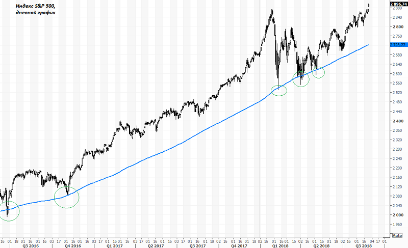
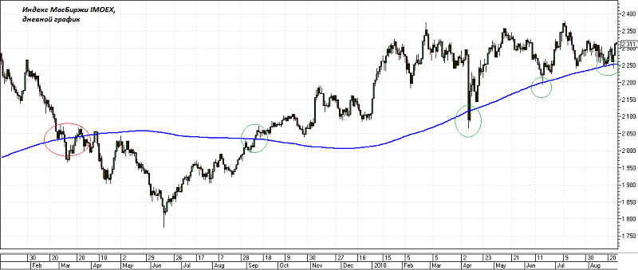
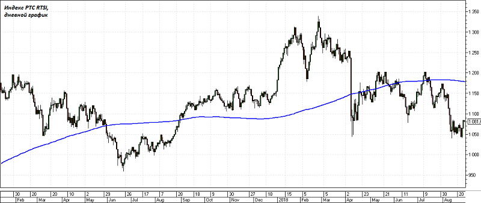
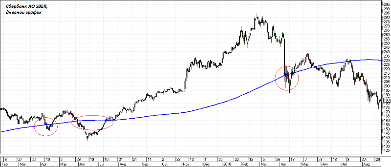
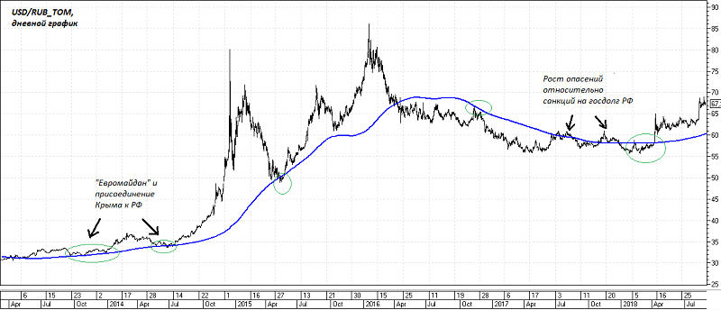
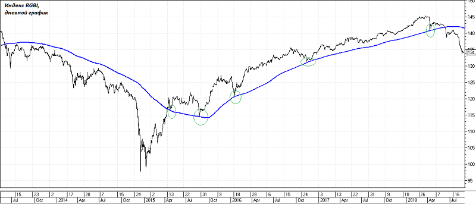

За многолетнюю историю в техническом анализе были созданы сотни индикаторов. Однако одними из наиболее популярных, надежных, объективных и полезных инструментов считаются скользящие средние.
Скользящие средние бывают различных видов: простые (Simple Moving Average - SMA), экспоненциальные (Exponential Moving Average - EMA), их производные. Все они имеют одно назначение – определение текущего тренда финансовых активов путем сглаживания колебаний и шума.
Скользящая средняя является результатом усреднения цены бумаги за выбранный период. После расчета итоговое значение отображается на графике в виде кривой линии для того, чтобы трейдеры могли рассматривать сглаженные данные, а не фокусироваться на ежедневных колебаниях цен.
На рынке США, родине технического анализа, наиболее популярной является простая 200-дневная скользящая средняя. Она считается одним из ключевых технических индикаторов направления тенденции на рынке. Если ценовой график удерживается выше неё, значит на рынке доминируют покупатели, если же цена спускается ниже – жди распродаж.
Эта же средняя может успешно использоваться в качестве линии поддержки/сопротивления при определении оптимальной точки входа после отката.
Однако не все закономерности, которые отслеживают инвесторы и трейдеры на западных рынках, также хорошо работают на Мосбирже. В нашем исследовании мы взяли несколько популярных российских инструментов: Индекс МосБиржи, Индекс РТС, валютную пару USD/RUB_TOM, индекс гособлигаций RGBI, а также ряд ликвидных акций, в том числе бумаги Сбербанка и Газпрома.
На каждом из инструментов вручную мы проверили гипотезу, работает ли 200-дневная скользящая средняя в качестве индикатора тренда, и можно ли ее рассматривать в качестве поддержки и сопротивления.
Индекс МосБиржи оказался весьма чувствителен к индикатору, особенно в последние полгода. Сразу после достижения индексом средней следовал активный выкуп просадки. Можно сказать, что при отслеживании динамики IMOEX 200-дневная средняя – вполне рабочий инструмент.
При этом стоит отметить, что ориентироваться на этот индикатор инвесторы стали не так давно. С 2011 по 2015 г., когда индекс находился в боковике, скользящая средняя не выступала в качестве поддержки или сопротивления, а скорее давала ориентир справедливого значения индекса, к которому котировки могут вернуться после отклонения в ту или иную сторону. Это, в общем-то, полностью соответствует принципу работы трендовых индикаторов – в отсутствии тренда они не работают.
А вот для индекса РТС индикатор оказался не столь полезен. За весь период исследования с 2007 г. 200-дневная скользящая игнорировалась участниками торгов и не давала явных сигналов. Можно смело сказать, что для этого инструмента индикатор непригоден.
Аналогичная ситуация с акциями Сбербанка и Газпрома, что оказалось несколько неожиданно. Если Газпром с 2010 г. стоит в боковике и высокой эффективности трендовых индикаторов здесь особо не ожидалось, то на графике Сбербанка индикатор вполне мог бы показать хороший результат. Несмотря на популярность среди нерезидентов и трендовый характер движения, рисунок графика Сбербанка возле средней не дает определенного сигнала о продолжении или окончании тенденции. Последним ярким примером стало падение «черного понедельника» в апреле, когда падение и откат акции происходили без малейшей оглядки на среднюю.
В противоположность акциям, валютный инструмент, задействованный в нашем исследовании, показал весьма неплохие результаты при использовании индикатора. Валютная пара USD/RUB с расчетами «завтра» с небольшой погрешностью достаточно четко сохраняла свое положение относительно средней, меняя его лишь в моменты существенного изменения настроений на рынке.
На графике хорошо различима фаза роста с 2013 по 2016 г. и фаза снижения с весны 2016 по весну 2018 г. Положение цены относительно скользящей средней хорошо демонстрирует настроения на рынке в периоды низкой волатильности. А в периоды сильных движений индикатор хорошо отрабатывает себя в качестве линии поддержки/сопротивления. С апреля 2018 г. курс валюты стабильно держится выше 200-дневной линии, указывая на негативные ожидания иностранных инвесторов относительно перспектив вложений в российские активы.
Несколько неожиданными оказались результаты тестирования индикатора на индексе гособлигаций РФ RGBI. Хотя облигации не входят в число инструментов, где активно применяется технический анализ, с конца 2015 г. до недавнего времени скользящая средняя выступала отличной линией поддержки, на которой заканчивались все более-менее значимые коррекции по индексу.
Возможно, такая тенденция связана с тем, что российские ОФЗ были весьма востребованы среди нерезидентов. Иностранные инвесторы при выборе цен для покупок ориентировались, в том числе и на этот технический индикатор. Сейчас индекс уверенно держится ниже индикатора, что является отражением сильных опасений рынка относительно санкций на госдолг РФ.
Подводя итоги исследования, мы получили следующий результат: на Индексе Мосбиржи, валютной паре USD/RUB_TOM и индексе гособлигаций RGBI 200-периодная скользящая средняя оказывается хорошим индикатором тренда и инструментом для определения оптимальных ценовых уровней входа в сделку после отката.
При анализе графиков ликвидных акций российского рынка четких закономерностей с использованием 200-дневной средней выявлено не было.